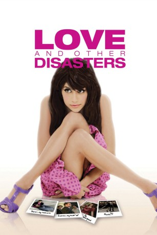

#7076 Love and Other Disasters
 
 IMDB-Wertung: 6.2 / 10
IMDB-Wertung: 6.2 / 10  Tomatometer: 20
Tomatometer: 20  Metascore: 0
Metascore: 0 
Jacks, die ihre Kindheit in Amerika verbrachte, lebt und arbeitet nun in London, beim britischen Magazin Vogue. Sie teilt sich eine Wohnung mit ihrem schwulen Freund Peter Simon, einem Drehbuchautor. Weil sie Angst vor einer festen Beziehung hat, zieht Jacks es vor, ihre Freizeit mit ihren Freunden zu verbringen und schläft mit ihrem Exfreund James, den sie nicht liebt. Peter, der niemals in einer Beziehung war, verbringt sehr viel Zeit mit Träumen und kann sich daher nicht in eine richtige Person verlieben. In der späteren Entwicklung des Films sehen alle ihre Fehler ein und letztendlich kommt es noch zu einem Happy End.
Jahr: 2006
Dauer: 90 Minuten
FSK: 6
Land: Frankreich Studio: 3L FilmverleihTonspuren: DTS - ,
Untertitel:
Auflösung: 1080p (1920x1040) Größe: 6533 MB
Genre: Komödie, Liebe
Regisseur: Alek Keshishian
Drehbuch: Alek Keshishian
Soundtrack:
Darsteller:
 Brittany Murphy als Emily Jackson-Jacks
Brittany Murphy als Emily Jackson-Jacks Matthew Rhys als Peter Simon
Matthew Rhys als Peter Simon Catherine Tate als Tallulah Riggs-Wentworth
Catherine Tate als Tallulah Riggs-Wentworth- Santiago Cabrera als Paolo Sarmiento
 Elliot Cowan als James Wildstone
Elliot Cowan als James Wildstone- Stephanie Beacham als Felicity Riggs-Wentworth
 Jamie Sives als Finlay McMillian
Jamie Sives als Finlay McMillian- Will Keen als David Williams
 Michael Lerner als Marvin Bernstein
Michael Lerner als Marvin Bernstein Dawn French als Therapist
Dawn French als Therapist- Richard Wilson als Registrar
- Adam Rayner als Tom / Fantasy David
- Angus Deayton als Celebrity
- Frédéric Anscombre als Sascha Santori
- Philippine Leroy-Beaulieu als Daphne Spring
- Samantha Bloom als Pandora
- Daniel Njo Lobé als Freedom
 Juliet Howland als Passenger Rep
Juliet Howland als Passenger Rep Gwyneth Paltrow als Hollywood Jacks
Gwyneth Paltrow als Hollywood Jacks Orlando Bloom als Hollywood Paolo
Orlando Bloom als Hollywood Paolo Rene Costa als Bidder , uncredited
Rene Costa als Bidder , uncredited Julie Eagleton als Model , uncredited
Julie Eagleton als Model , uncredited- Tony MacMurray als Klauss Fassbinder
- Jamie Honeybourne als Unicorn Gallagher
- Gwyneth als Model 1
- Natalia Khutkubia als Model 2
- Nicholas Mead als Chancery Front Desk
- J.J. O'Neil als Fireman Stripper
- Jade Parfitt als Jade
- Joanna Dickens als Bride 1
- Leelo Ross als Bride 2
- Jason Stracey als Groom 1
- Ross Hammond als Groom 2
- Feyi Babalola als Female Secretary
- Lorna Gayle als Heathrow Female Guard
Datei: X:\2006(G-M)\Love and Other Disasters (2006, FSK6, 1920x1040).mkv seit 21.09.2017
Festplatte: HD 2005(G-Z)-2006(A-Z)
 Es gibt insgesamt 48 Filme in der Gruppe '2006(G-M)'
Es gibt insgesamt 48 Filme in der Gruppe '2006(G-M)'